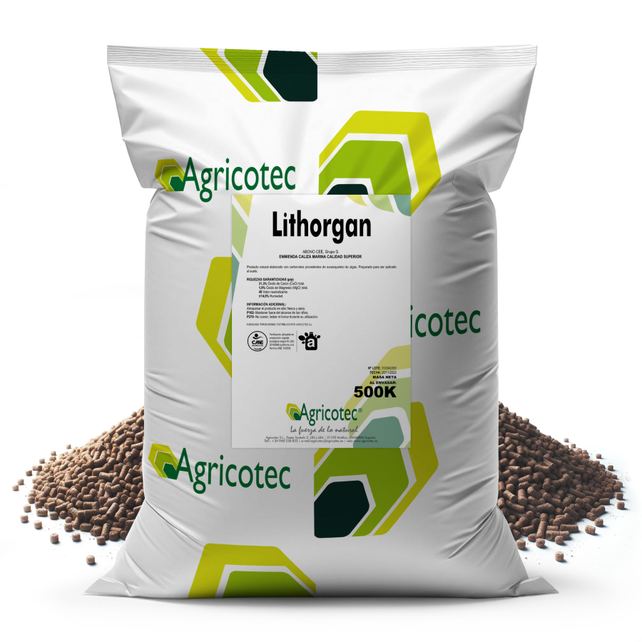
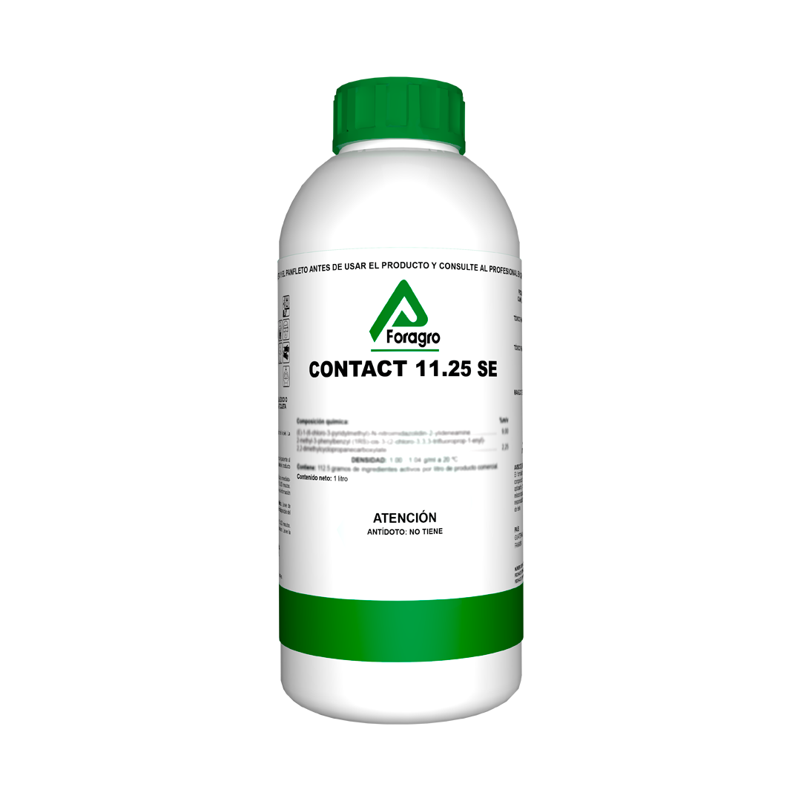
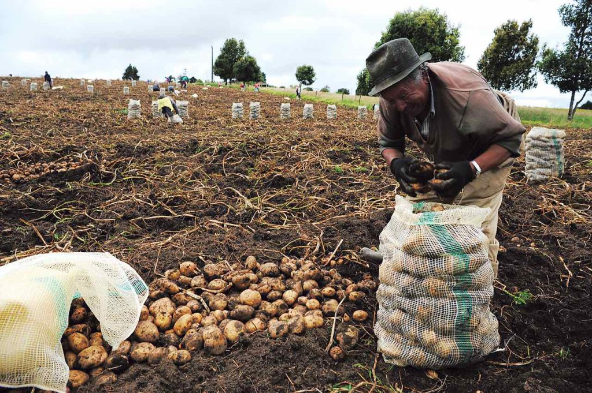
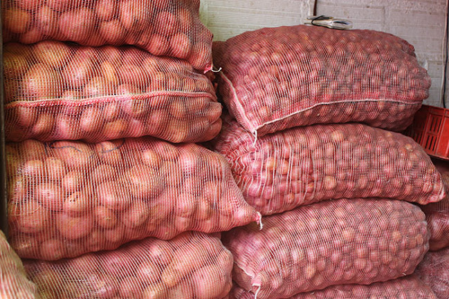
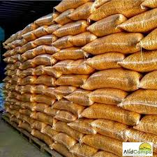

¿Qué es nuestra Marketplace?
Es un espacio en línea donde agricultores y empresas pueden vender sus productos directamente a consumidores y distribuidores sin intermediarios.

Beneficios
- Acceso a una red más amplia de compradores.
- Precios justos sin intermediarios.
- Venta directa y sin complicaciones.
- Facilidad de uso para agricultores y compradores.


¿Qué productos se pueden vender?
Desde frutas y verduras frescas, como tambien productos para cultivos que promocionan las empresas.


¿Imformacion del mercado ?
- precios de algunos productos del mercado
- informacion sobre agricultura
- productos mas vendidos
- Video Informativo


Empresas
Aquí encontrarás empresas que ofrecen insumos y productos agrícolas.
Agricotec |
||
|  |
Mejora la fertilidad de tu suelo de forma natural con el Abono Orgánico Agricotec. Enriquecido con nutrientes esenciales y microorganismos beneficiosos, este fertilizante potencia el crecimiento de tus cultivos, aumenta la retención de agua y mejora la estructura del suelo. 100% ecológico y libre de químicos, es la solución ideal para una agricultura sostenible y productiva. ¡Nutre tu tierra con lo mejor de la naturaleza! 🌿✨ |
|
Foragro |
||
|  |
CLASIFICACIÓN: Insecticida CARACTERÍSTICAS: Insecticida que actua por contacto e ingestión actuando sobre plagas de insectos chupadores CONTROL BIOLÓGICO: mosca blanca, pulgón, tortugilla, trips CULTIVOS: Maíz, tomate, cebolla, chile, papa, pepino, repollo, brocoli, berenjena, frijol, ejote, arveja, ajo DOSIS: 25cc DOSIS MZ: 325cc PAÍS: Guatemala PRESENTACIONES: 100ml, 250ml, 1L |
|
Agricultores
Aquí encontrarás Agricultores que ofrecen insumos y productos agrícolas.
|  |
German Rosero |
|
|  |
**"¡Las mejores papas para tu mesa! 🥔✨** Disfruta de papas frescas, de alta calidad y con el mejor sabor. Perfectas para frituras, guisos o puré. Compra ahora y Disfruta. ¡Calidad garantizada!" |
|

|
Daniel Quintero |
|
|  |
**"🌽 Maíz fresco de alta calidad – Directo del campo a tu mesa!** 📍 **Ubicación:** [Indica la ciudad o región de origen] 📦 **Presentación:** Disponible en sacos de 25 kg, 50 kg y ventas al por mayor. 🌾 **Tipos de maíz:** Amarillo, blanco y morado (según disponibilidad). 💰 **Precio:** Desde [40.000$] – ¡Consulta por descuentos en compras grandes! **Promoción especial:** Compra 3 sacos y obtén envío gratis dentro de [zona de cobertura]. 🔥📲 ¡Haz tu pedido ahora y disfruta de maíz fresco y de calidad!... 🚛💨" |
|
Contacto
Para más información, escríbenos a contacto@marketagro.com